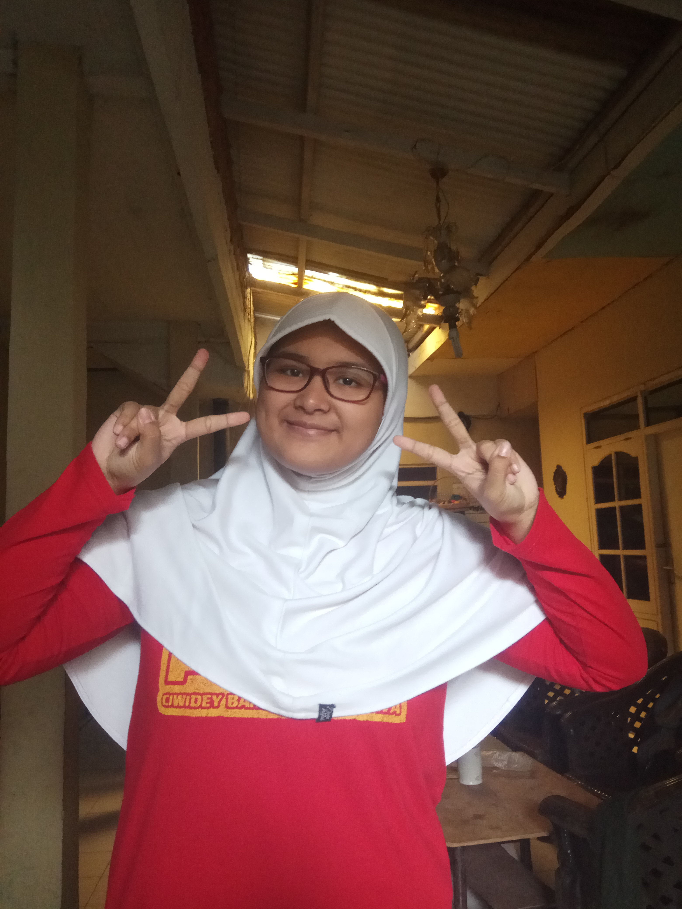
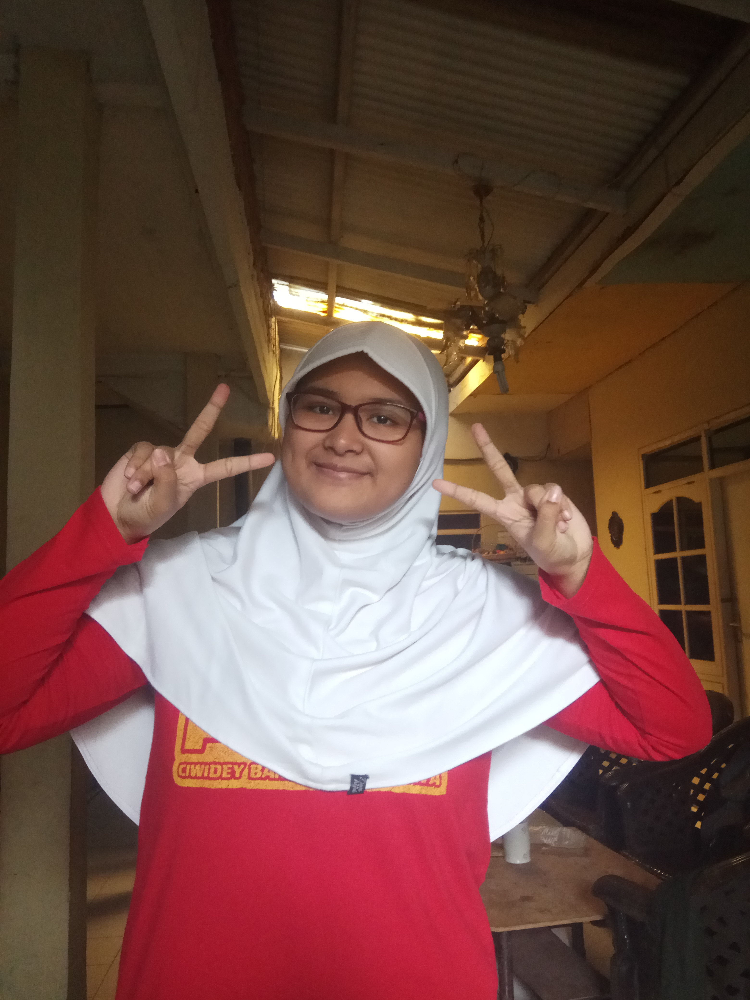

Biodata sang Pembuat Web
Penasaran kan siapa yang buat?
Yuk kita cek, Cekidott...

Nama Lengkap: Athaya Nur Syahirah
Nama Panggilan: Taya, Tay, Aya, Syahirah
Tanggal Lahir: 03 Mei 2002
Makanan Favorit: Semua makanan halal kecuali ati ampela wkwkw
Minuman Favorit: Air putih (Menyehatkan badan dong)
Benda yang paling disayang: Brush pen, karena harganya mahal huhu T^T
Hobi: Membaca buku (yang pasti bukan buku pelajaran), Bermain game, Tidur, Menggambar, Menulis
Yuk kita cek, Cekidott...
Nama Lengkap: Athaya Nur Syahirah Nama Panggilan: Taya, Tay, Aya, Syahirah Tanggal Lahir: 03 Mei 2002 Makanan Favorit: Semua makanan halal kecuali ati ampela wkwkw Minuman Favorit: Air putih (Menyehatkan badan dong) Benda yang paling disayang: Brush pen, karena harganya mahal huhu T^T Hobi: Membaca buku (yang pasti bukan buku pelajaran), Bermain game, Tidur, Menggambar, Menulis